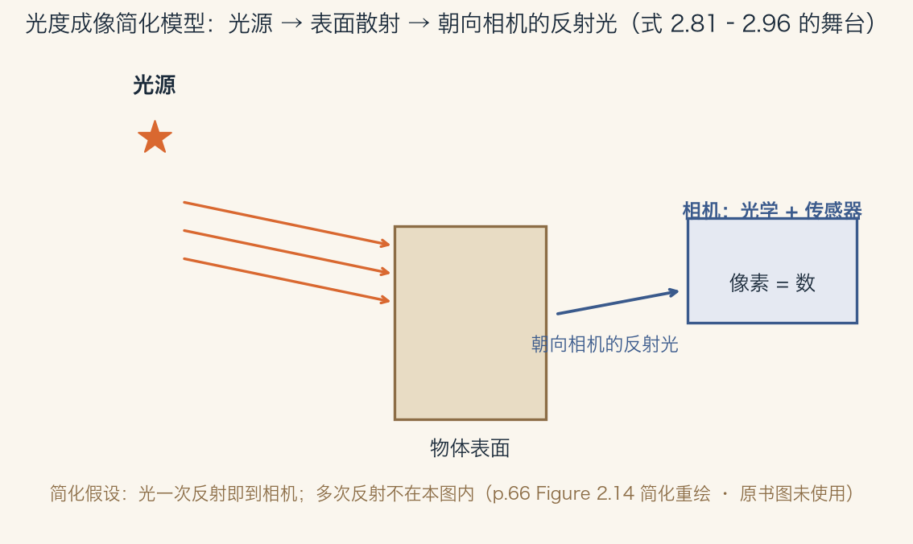
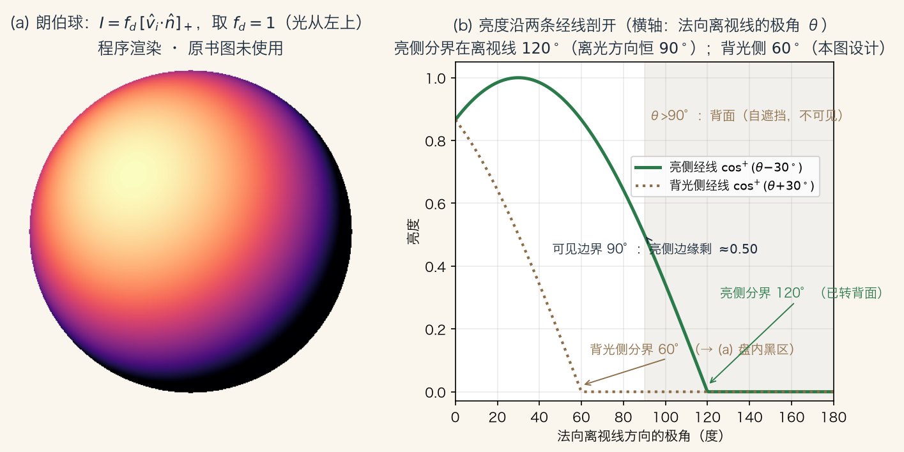
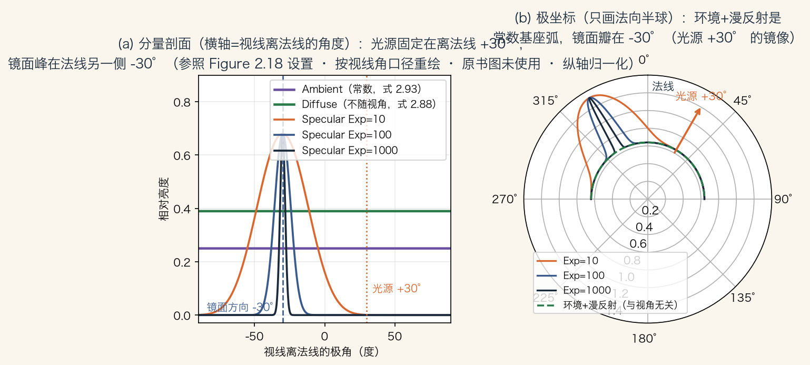
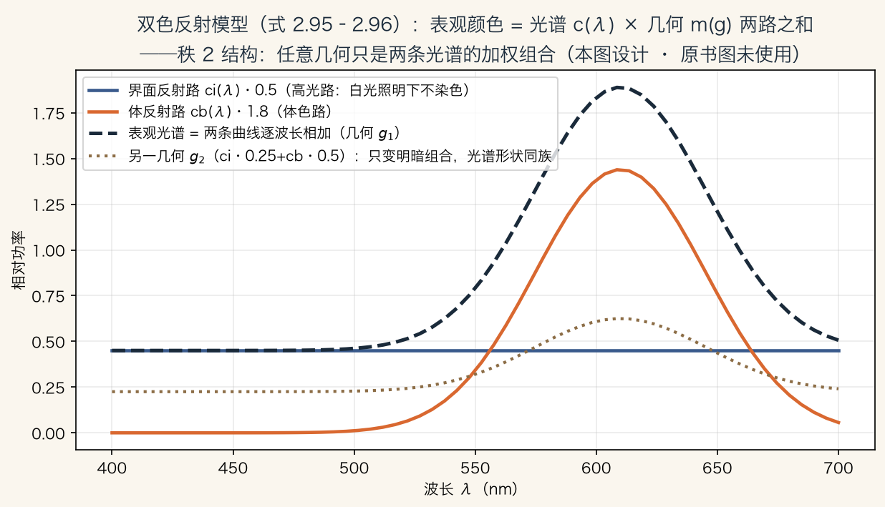

开篇 · 光度成像
光如何变成像素里的数
照片由离散的颜色或强度值组成。
常见 8 位图像，取值 0 到 255。
这集追问：这些数值从哪里来。
光照、表面、相机、传感器共同决定。
依据：原书第 66 页
四件事
环境光照
表面性质与几何
相机光学
传感器特性
正课第十集
01 / 16
全景 · 简化模型
一条完整的光度成像链路
光源发光，照到物体表面。
表面把一部分光反射向相机。
这是简化模型，忽略多次反射。
现实里光常在墙面之间来回弹。
依据：原书第 66 页

光度成像简化模型：光源→表面反射→相机｜程序生成，未用教材或论文原图
正课第十集
02 / 16
光源 · 点光源
点光源：位置、光谱与衰减
点光源在一个位置发光，比如小灯泡。
也可以放到无穷远，比如太阳。
两样参数：强度和颜色光谱 L(λ)。
强度随距离平方衰减。
依据：原书第 66–67 页；本集实验
点光源
位置：一点或无穷远
光谱：能量随波长的分布
衰减：距离平方反比
软阴影：太阳按面光源
正课第十集
03 / 16
光源 · 面光源与环境
面光源与环境贴图
荧光顶灯可建模成有限矩形。
方向性强的分布用四维光场。
环境贴图把入射方向映射成颜色。
三种表示：立方体面、经纬图、反射球。
依据：原书第 67 页
环境贴图
式 2.81：L(v̂; λ)
等价于光源都在无穷远
拍镜面球照片可粗略获取
有时配暗球捕捉高光
正课第十集
04 / 16
反射 · BRDF
BRDF：表面如何分配反射光
BRDF 描述入射光朝各方向反射多少。
以表面局部坐标架为参照。
四个角度加波长，共五个量。
角度占四个，所以是四维函数。
依据：原书第 68 页
fᵣ(θᵢ, φᵢ, θᵣ, φᵣ; λ)
式 2.82：入射天顶角、入射方位角、出射天顶角、出射方位角，再加波长
正课第十集
05 / 16
BRDF · 两条性质
互易性与各向同性
互易：入射、出射方向对调，答案不变。
这来自光传播的物理，也叫 Helmholtz 互易。
各向同性：两个方向一起绕法线转，性质不变。
四个角度可压成三个，式 2.83。
依据：原书第 68 页；本集实验
两条性质
互易：f(vi, vr) = f(vr, vi)
本集 200 组随机方向验证
各向同性：只依赖相对方位差
拉丝铝是各向异性例外
正课第十集
06 / 16
反射 · 反射方程
把所有入射方向积分起来
每个方向的光强乘 BRDF，再乘余弦。
对所有入射方向积分，得式 2.84。
余弦因子叫前缩，斜照会摊薄。
背光取零，写成 max(0, cos θᵢ)。
依据：原书第 69–70 页
Lᵣ(v̂ᵣ; λ) = ∫ Lᵢ(v̂ᵢ; λ) fᵣ(v̂ᵢ, v̂ᵣ, n̂; λ) cos⁺θᵢ dv̂ᵢ
式 2.84；cos⁺θᵢ = max(0, cos θᵢ)，式 2.85。单位面积接收的光功率叫辐照度
正课第十集
07 / 16
反射 · 离散光源
有限个点光源：积分变求和
光源是有限个点光源时，积分变求和。
每个光源贡献光强乘 BRDF 乘余弦。
BRDF 可来自物理建模或启发式建模。
也可以来自测量采样，比如 CURET。
依据：原书第 69 页
Lᵣ(v̂ᵣ; λ) = Σᵢ Lᵢ(λ) fᵣ(v̂ᵢ, v̂ᵣ, n̂; λ) cos⁺θᵢ
式 2.86；物理建模如微面元，启发式如 Phong，测量如 CURET
正课第十集
08 / 16
漫反射 · 朗伯
漫反射：均匀散光与体色
漫反射把光均匀散向四面八方。
雕像表面平滑的明暗过渡就是它。
光钻进材料内部，被选择性吸收再射出。
所以白光照红塑料，反射出来是红光。
依据：原书第 70 页；本集实验

朗伯球亮度与两条经线剖面：亮侧分界 120°，背光侧 60°｜程序生成，未用教材或论文原图
正课第十集
09 / 16
镜面反射 · 高光
镜面反射：绕法线翻转 180°
镜面反射把入射光绕法线翻转 180°。
反射方向 ŝ = (2n̂n̂ᵀ − I)vᵢ，式 2.90。
法向分量保留，切向分量取反。
指数越大，高光越小越锐利。
依据：原书第 70–71 页；本集实验
ŝᵢ = v∥ − v⊥ = (2n̂n̂ᵀ − I)vᵢ
式 2.90；θs 是视线与镜面方向的夹角，式 2.91–2.92 给高光分布
正课第十集
10 / 16
着色 · Phong 模型
环境 + 漫反射 + 镜面
环境光不随表面朝向变。
它代表墙面互反射、蓝天这类弱光。
漫反射项是 kd 乘 max(0, v·n)。
镜面项是 ks 乘 (v̂r·ŝ)^ke。
依据：原书第 72 页；本集实验

Phong 三分量剖面：环境与漫反射水平，镜面峰随指数收窄｜程序生成，未用教材或论文原图
正课第十集
11 / 16
颜色 · 三条规律
Phong 模型里的三条颜色规律
环境系数 ka 和漫反射系数 kd 同谱。
两者都来自材料内部的体反射。
镜面系数 ks 常白，界面反射不染色。
铜这类金属例外；阴影常因天空光偏蓝。
依据：原书第 72 页
三条规律
ka 与 kd：同一条材质谱
ks 常白：高光呈光源色
铜：有色镜面反射
阴影偏蓝：天空环境光
正课第十集
12 / 16
双色 · 光谱乘几何
双色反射：两路之和
均匀材质在单光源下的表观颜色。
等于界面反射加体反射。
每一项都是光谱乘几何。
颜色只看波长，强弱只看角度。
依据：原书第 73 页

双色反射：界面反射与体反射两路，逐波长相加｜程序生成，未用教材或论文原图
正课第十集
13 / 16
全局光照 · 两条路线
光不只弹一次：两条经典路线
现实里光源会被遮挡，光会多次反弹。
镜面为主：用光线追踪，从相机出发。
反照率均匀、几何简单：用辐射度。
辐射度算形状因子，解大型线性方程组。
依据：原书第 73–74 页
两条路线
光线追踪：玻璃、镜面球
辐射度：面片 + 形状因子
近场变暗与部分遮挡可被利用
一定条件下可从照片恢复全局光照
正课第十集
14 / 16
总结 · 四句话
把这一集收成四句话
四件事决定像素数值：光照、表面、相机、传感器。
点光源平方反比；环境贴图设光源在无穷远。
BRDF 四维、互易；各向同性可压三维。
Phong 三项；双色模型拆成光谱乘几何。
依据：原书第 66–73 页
词汇卡
光度成像 / 点面光源
环境贴图 / BRDF / 互易性
漫反射 / 镜面反射 / 环境光
双色反射 / 光线追踪 / 辐射度
正课第十集
15 / 16
回书 · 作业与下一集
翻回第 66–74 页
本集范围：2.2 开篇加 2.2.1、2.2.2。
公式 2.81–2.96，页码 66–74。
作业：推导平方反比，算朗伯球亮度。
作业：证明式 2.90 等价于绕法线翻转。
依据：原书第 66–74 页
下一集
薄透镜与对焦
曝光与渐晕
像差
然后落到传感器
正课第十集
16 / 16